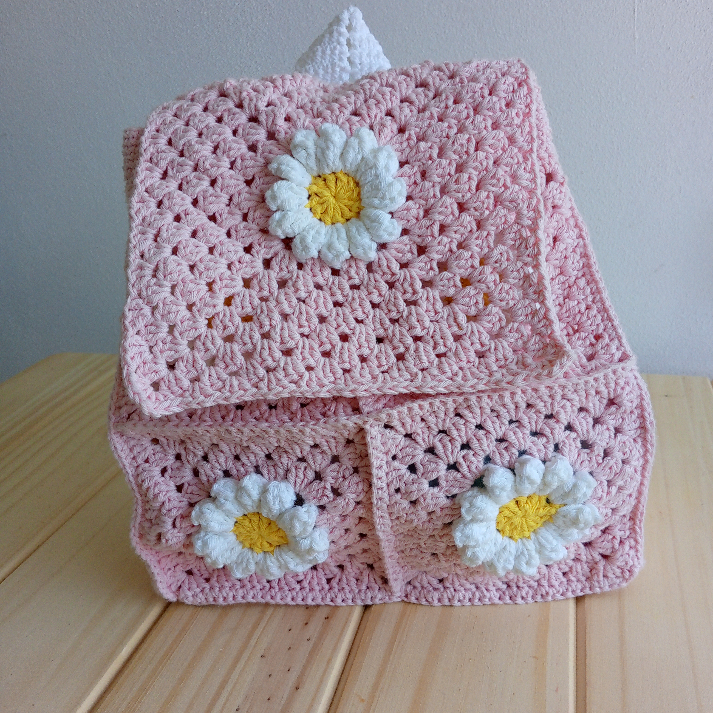

Amigurumi Pikachu
Personaje tejido a mano con detalles amarillos, negros y rojos.
Consultar por este productoConocé algunos de nuestros tejidos hechos a mano y encontrá tu próximo diseño favorito.
Personaje tejido a mano con detalles amarillos, negros y rojos.
Consultar por este producto
Un amigurumi artesanal con detalles cuidados en cada punto.
Consultar por este producto
Creación tejida en tonos rosados, decorada con una flor artesanal.
Consultar por este producto
Sonajero artesanal con una figura de osito tejida a crochet.
Consultar por este producto